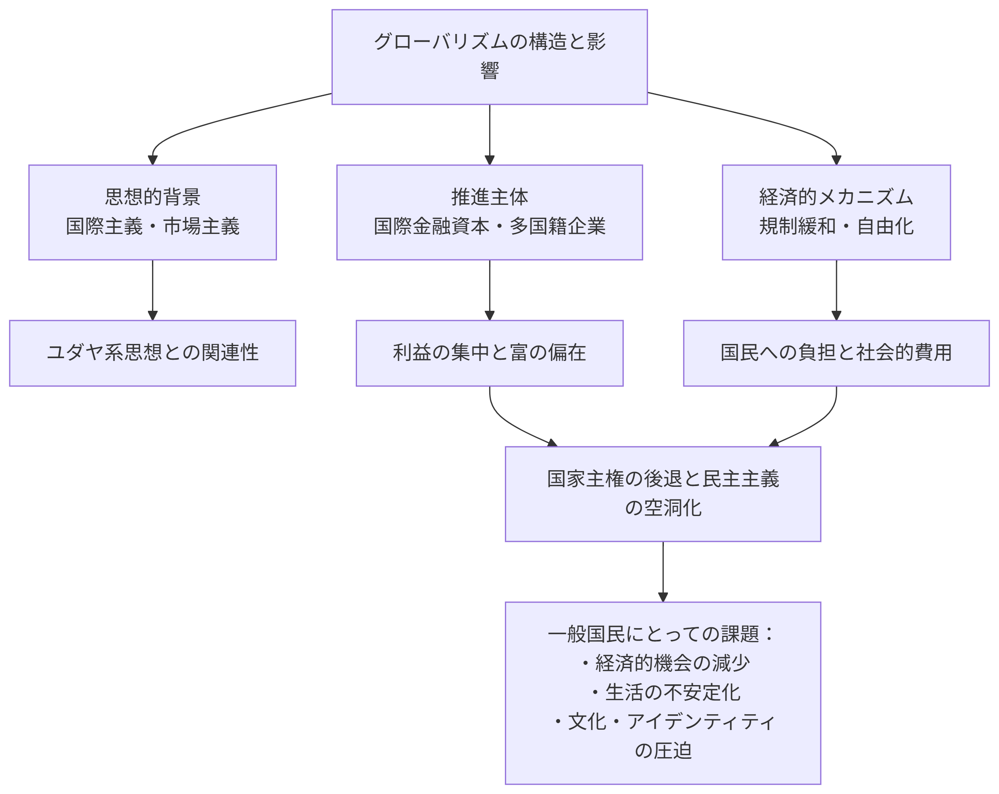

グローバリズムの隠された目的とユダヤ系思想の関連性
グローバリズムは表向きには「国境を越えた協調と繁栄」を標榜しながらも、その実態は国際的な金融資本や多国籍企業による富の集中と権力掌握の手段となっている可能性があります。

思想的背景と歴史的関連性
- 国際金融資本の思想的ルーツ: グローバリズムを推進する思想の一部には、国境に縛られない国際主義的な考え方が見られ、これは歴史的にユダヤ系知識人や金融資本家の間で強かった傾向
- マルクス主義と国際資本主義の奇妙な一致: 両極端に見える思想ながら、ともに国家の解体と世界の単一化を目指す点で共通している
- 中央銀行制度の世界的普及: 国家の通貨発行権を民間銀行に委ねるシステムが世界的に広がり、国際金融資本に巨大利益をもたらしている
注意: ユダヤ人を一括りにして論じることは誤りです。ユダヤ人社会内部でも多様な意見があり、特定の民族や宗教と結びつけた陰謀論は現実を単純化しすぎています。あくまで歴史的な思潮の分析として捉える必要があります。
多国籍企業と大富豪に有利なシステム
グローバリズムの経済システムは、以下のような方法で国際的な大企業と富裕層に有利に機能しています。
租税回避のメカニズム
多国籍企業は複数の国の税制の違いを利用して、実効税率を大幅に引き下げています。
- タックスヘイブン（租税回避地）への利益移転
- 移転価格操作による税負担の軽減
- 国際的な二重非課税の利用
- 各国の税制競争を利用した優遇措置の獲得
注：「国際的な二重非課税の利用」とは、多国籍企業や個人が複数の国にまたがる税制の違いを活用し、同じ所得に対して二重に課税されない状況を作り出す手法を指します。例えば、ある企業が一国で得た利益を別の国に移転し、その両方で税負担を回避または軽減する仕組みです。これは主に国際的な租税条約や異なる税率の差を利用して行われ、結果として税収が減少する問題が各国で指摘されています。
労働コストの最小化
人件費の安い国への生産移管によって、企業は労働コストを削減しています。
- 発展途上国への工場移転と現地安価労働力の利用
- 先進国における労働組合の弱体化と交渉力低下
- 移民労働者を使った賃金圧迫
- 「底辺への競争」による労働環境の悪化
一般国民への影響と「搾取」の構造
グローバリズムの進展は、一般国民に以下のような形で影響を及ぼしています。
経済的搾取のメカニズム
- 賃金の停滞と格差拡大: 労働者の交渉力が弱まり、賃金が長期間にわたって停滞
- 雇用の不安定化: 非正規雇用の増加と職業の流動化による生活の不安定さ
- 公共サービスの削減: 企業の税逃れにより国家財政が逼迫し、教育・医療・福祉などのサービスが縮小
- 資産インフレによる富の再分配: 金融緩和により資産価格が上昇し、資産保有者と非保有者の格差が拡大
社会的・文化的影響
- 国民文化の均一化: 多国籍企業による画一的な消費文化の普及と地域文化の衰退
- 社会的紐帯の弱体化: 伝統的な共同体の解体と個人の孤立化
- 民主主義の空洞化: 国際資本の政治への影響力増大と有権者の無力化
国際金融資本の支配メカニズム
国際金融資本は以下のような方法で世界経済と政治に影響力を行使しています。
中央銀行制度と通貨発行権
- 民間銀行による通貨発行権の実質的掌握
- 債務を通じた国家支配の構造
- 金利操作による経済コントロール
「FRB」（連邦準備制度）は、アメリカの中央銀行制度で、経済政策や通貨供給を管理します。その特徴として、プライベート・バンク（民間銀行）が主要な構成員として関与し、連邦政府ではなく民間金融機関が大きな影響力を持つ構造が強調されます。
国際機関を通じた影響力行使
- IMF（国際通貨基金）と世界銀行による構造調整プログラム
- WTO（世界貿易機関）を通じた多国籍企業優遇ルールの制定
- 国際的な規格・標準化による市場支配
結論：一般国民のための解決策とは
グローバリズムが国際的な資本家階級に富を集中させるメカニズムであるならば、一般国民の利益を守るためには以下のような対策が必要です。
- タックスヘイブン対策と国際的な課税協調: 多国籍企業の租税回避を防ぐための国際的な協調体制の構築
- 主権の回復と民主主義の強化: 国際資本の影響力を排し、国民の手に政治決定権を取り戻す
- 経済主権の確立: 戦略的重要産業の国内保持と地域経済の強化
- 労働者の権利保護: 国際的な労働基準の設定と労働組合の強化
- 金融規制の強化: 国際的な資本移動の規制と投機的取引への課税
グローバリズムの本当の危機は、それが「不可避な未来」として提示されながら、実際には特定のエリート層に利益をもたらすように設計されている点にあります。一般国民のための経済システムを構築するには、この構造を理解し、民主的なコントロールを取り戻すことが不可欠です。